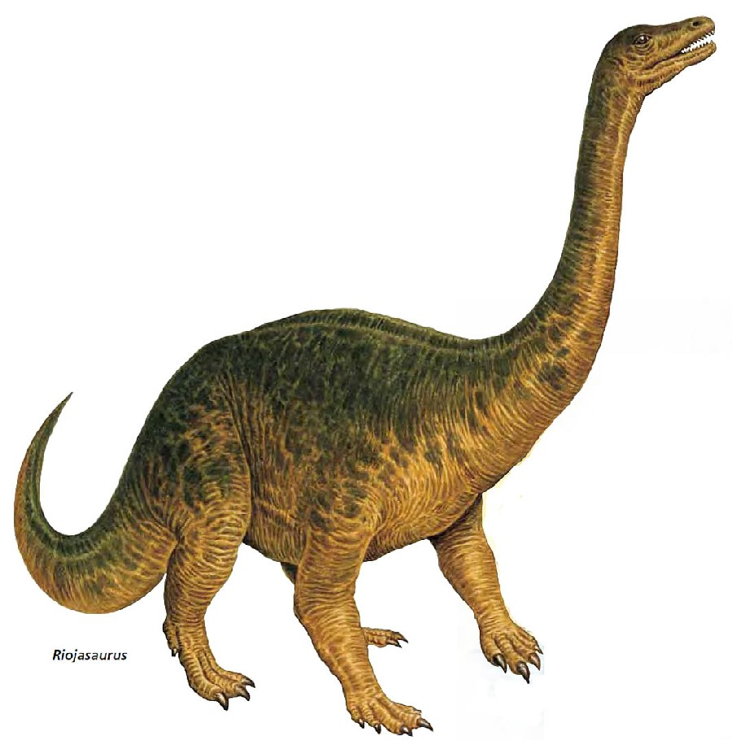
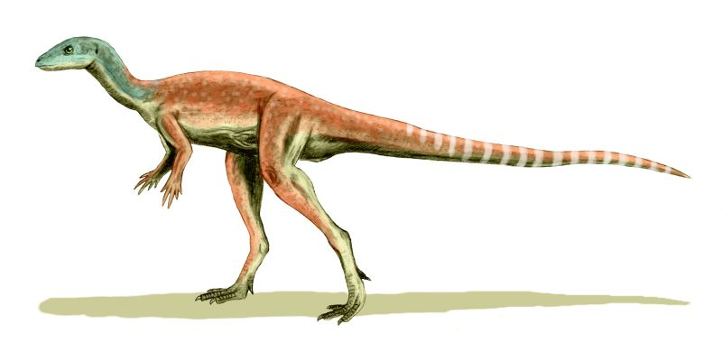
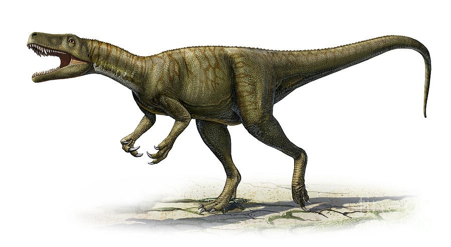
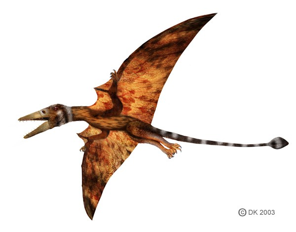

Triassic Period
Riojasaurus
Riojasaurus was a genus of sauropodomorph dinosaur that lived during the Late Triassic period, around 220 million years ago. Its fossils have been found in Argentina, in the Ischigualasto Formation.
Riojasaurus was a relatively small sauropod, with an estimated length of around 30 feet (9 meters) and a weight of around 1 ton. It had a long neck and tail, which it likely used to reach high vegetation. Its forelimbs were shorter than its hindlimbs, which is a characteristic of all sauropods. However, Riojasaurus also had relatively short hindlimbs compared to other sauropods, which suggests that it may have been a slow walker.
The teeth of Riojasaurus were small and pointed, and were likely used to strip vegetation from branches. It also had a unique tooth structure that suggests it may have been able to switch between a herbivorous and omnivorous diet, although this is still a matter of scientific debate.
Riojasaurus was one of the earliest sauropod dinosaurs, and it played an important role in the evolution of this group of animals. It is also an important part of the Late Triassic ecosystem, which was characterized by a diversity of reptiles, including early dinosaurs, crocodiles, and several types of large predators.
- Ornithischians
- ▸ These are herbivorous dinosaurs that walked on two legs or four legs, and had a bird-like hip structure.
- Sauropods
- ▸ These are large, long-necked herbivores that walked on four legs.
- Theropods
- ▸ These are bipedal carnivores that walked on two legs.
- Pterosaurs
- ▸ These are not actually dinosaurs, but they are flying reptiles that lived at the same time as dinosaurs. They have wings made of skin that stretched from their bodies to their elongated fingers.
Examples of dinosaurs during Triassic period.
| Ornithischians | Sauropods | Theropods | Pterosaurs |
|---|---|---|---|
| Eocursor  |
Riojasaurus |
Herrerasaurus  |
Eudimorphodon  |
| Ankylosaurus, Stegosaurus, Edmontonia, Pachycephalosaurus | Argentinosaurus, Apatosaurus, Diplodocus, Saltasaurus | Velociraptor, Spinosaurus, Allosaurus, Deinonychus | Quetzalcoatlus, Nyctosaurus, Tupuxuara, Pterodaustro |